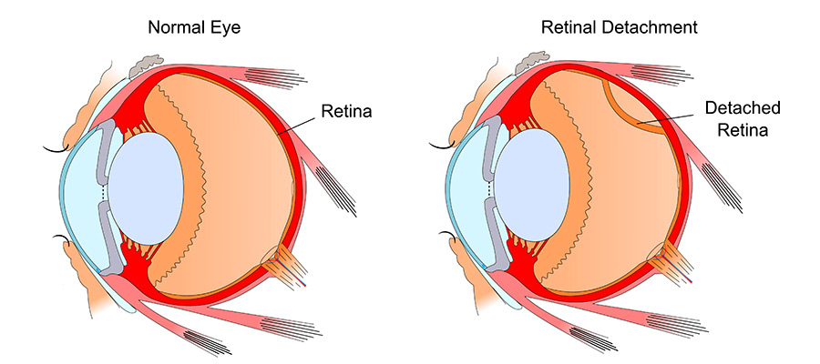

Our goal is to deliver excellence in eye care by combining medical expertise and advanced technology with a commitment to personal service. |
A cataract is a clouding of the natural lens of the eye. The lens is about the size and shape of an M&M candy and sits just behind the iris, the colored part of the eye. The lens is clear at birth, but with age it becomes clouded and the vision gets blurry (cataract). There are other reasons that the lens clouds such as injury, medications and metabolic diseases such as diabetes. During cataract surgery, the clouded natural lens (cataract) is broken up, removed and replaced with a very soft plactic, foldable intraocular lens. |
 |
Glaucoma is the leading cause of blindness. It is a disease of the optic nerve, the part of the eye responsible for carrying the images we see to the brain. The optic nerve is made up of huge numbers of nerve fibers. Glaucoma causes increased pressure within the eye, resulting in damage to these nerve fibers. Because the most common type of glaucoma dose not present any noticeable symptoms until serious optic nerve damage has already occurred, early detaction and treatment are the keys to preventing the loss of vision from glaucoma. |
Physicians at The Eye Clinic specialize in the treatment of diseases and injuries to the cornea. The cornea is the front of the eye that transmits light to the interior of the eye, allowing us to see clearly. Corneal injury, disease or hereditary conditions can cause clouding, distortion and scarring. With its ability for quick repair, the cornea usually heals after most injury or disease. However, when there is deep injury to the cornea, the healing process may be prolonged, possibly resulting in a variety of symptoms, including pain, tearing, redness, blurred vision, light sensitivity, and scarring. |
Clear vision plays a critical role in every aspect of your life. Fortunately today, there are vision correction options to bring life back into focus for nearly every vision problem. Whether your choice for clear vision is glasses, contact lenses or LASIK, The New Life Hospital Eye Clinic can help improve your point of view with the area's largest variety of vision correction options. |
 |
| Services | Doctors | New Life Hospital, No.26, Galle Road , Colombo 6 |
| Facilities | Health Packages | newlifehospital@gmail.com |
| Rooms | Patient Registration | 011 2635981 |
| Food & Beverages. | Channel your doctor | 011 2635982 |
©All Right Reserved | New Life Hospital